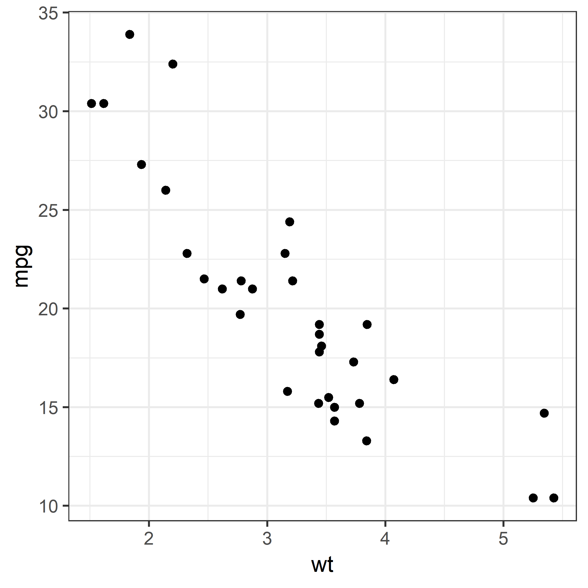
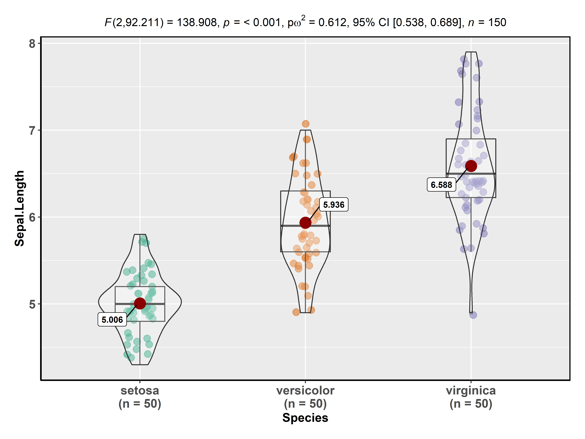
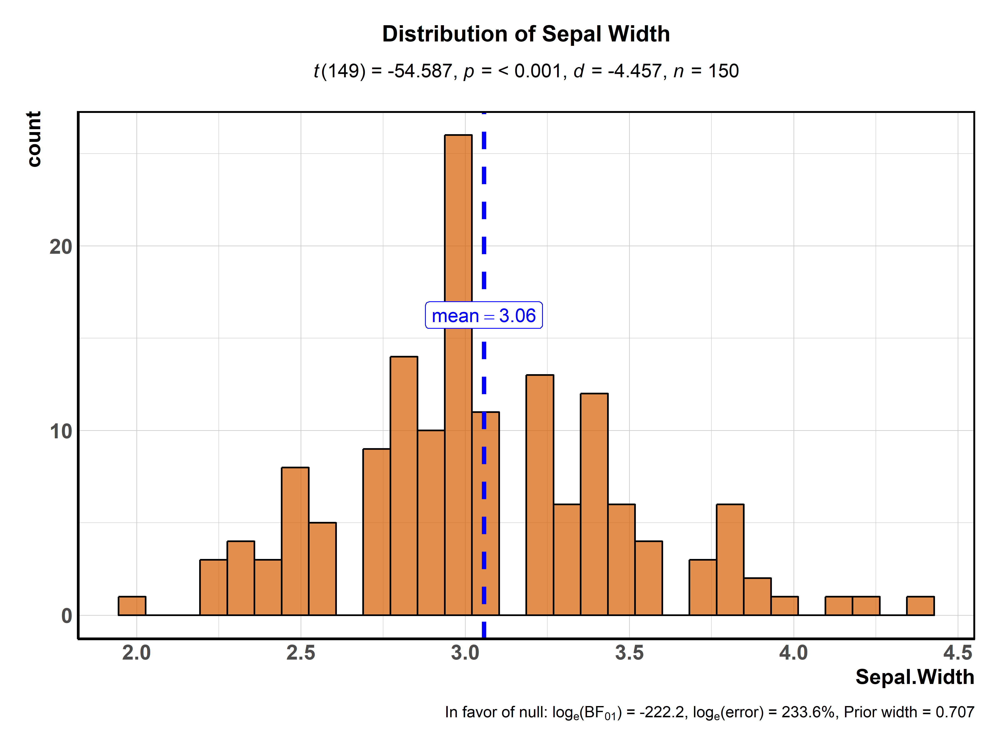
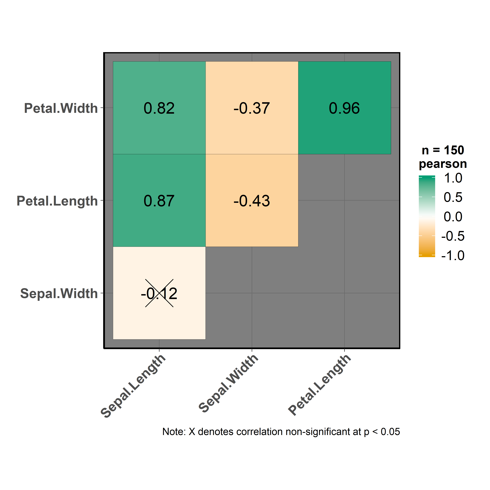

ggstatsplot theme
Indrajeet Patil
2018-08-28
theme_ggstatsplot.Rmd
Default theme for the package: theme_ggstatsplot
ggstatsplot uses a default theme theme_ggstatsplot(), which is a selected ggplot2 theme with few aesthetic modifications overlaid on top, that can be used with any ggplot2 object. Alternative name for this function is theme_mprl.
Here is a simple example:
library(ggplot2)
ggstatsplot::combine_plots(
# basic scatter plot
ggplot2::ggplot(
data = datasets::mtcars,
mapping = ggplot2::aes(x = wt, y = mpg)
) +
ggplot2::geom_point(),
# basic scatter plot with theme_ggstatsplot() added
ggplot2::ggplot(
data = datasets::mtcars,
mapping = ggplot2::aes(x = wt, y = mpg)
) +
ggplot2::geom_point() +
ggstatsplot::theme_ggstatsplot(),
labels = c("(i)", "(ii)"),
nrow = 1,
title.text = "Plot with and without ggstatsplot theme"
)
All plots in this package have theme_bw() by default as the base on which theme_ggstatsplot() is built, but this can be modified using the ggtheme argument provided for all functions. For example, for the ggbetweenstats function the default theme can be changed to, for example, theme_grey():
ggstatsplot::ggbetweenstats(
data = datasets::iris,
x = Species,
y = Sepal.Length,
messages = FALSE,
ggtheme = ggplot2::theme_grey() # selected ggplot2 theme
)
Let’s see another example with ggscatterstats, and note that the theme is now taken from the ggthemes package:
ggstatsplot::ggscatterstats(
data = datasets::iris,
x = Sepal.Width,
y = Sepal.Length,
messages = FALSE,
ggtheme = ggthemes::theme_tufte() # selected theme
)
#> Warning: This function doesn't return a `ggplot2` object and is not further modifiable with `ggplot2` functions.
It is important to note that irrespective of which ggplot theme you choose, ggstatsplot in the backdrop adds a new layer with its idiosyncratic theme settings, chosen to make the graphs more readable or aesthetically pleasing. Let’s see an example with gghistostats and see how a certain theme from hrbrthemes package looks with and without the ggstatsplot layer.
ggstatsplot::combine_plots(
# with the ggstatsplot layer
ggstatsplot::gghistostats(
data = datasets::iris,
x = Sepal.Width,
messages = FALSE,
title = "Distribution of Sepal Width",
test.value = 5,
ggtheme = hrbrthemes::theme_ipsum(),
ggstatsplot.layer = TRUE
),
# without the ggstatsplot layer
ggstatsplot::gghistostats(
data = datasets::iris,
x = Sepal.Width,
messages = FALSE,
title = "Distribution of Sepal Width",
test.value = 5,
ggtheme = hrbrthemes::theme_ipsum_ps(),
ggstatsplot.layer = FALSE
),
nrow = 1,
labels = c("(a)", "(b)"),
title.text = "Behavior of ggstatsplot theme layer with chosen ggtheme"
)
The only exception for how ggtheme argument is to be entered is ggcorrmat function where the theme should not be entered as a function.
ggstatsplot::ggcorrmat(
data = datasets::iris,
cor.vars = c(Sepal.Length:Petal.Width),
type = "upper",
ggtheme = ggthemes::theme_fivethirtyeight, # selected ggplot2 theme
ggstatsplot.layer = FALSE
)
Suggestions
If you find any bugs or have any suggestions/remarks, please file an issue on GitHub: https://github.com/IndrajeetPatil/ggstatsplot/issues